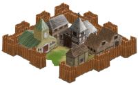

The FreeCol team aims to create the best Open Source version of Colonization (released under the GPL) possible. We started by focusing on an almost exact clone of Colonization, but with the visuals brought up to date with more recent standards. Certain new 'features' has been implemented but the gameplay and the rules can be played roughly the same as the original game. Examples of more modern features are: an isometric map and multiplayer support.
 This game has been developed incrementally and resulted in FreeCol 1.0.0, which was close to a Colonization clone when played with the "Classic" ruleset. We are continuing development of the game incrementally to add new exciting features. Incremental development basically means that we are adding features one at a time while ensuring that the game is always running smoothly.
We have added extensive modability to the game. This allows our players to experience both the classic gameplay as well as exciting new possibilities. Our path forward is improving both.
The motivation of the FreeCol team was originally to create a successor to the original game, but we finally got a commercial remake of the game in 2008. Still, FreeCol offers functionality not available to any of those games -- for example massive maps with hundreds of colonies.
You can read more on the history of FreeCol.
The original Colonization was released in 1994 by Microprose. Colonization is heavily based on Civilization which is generally considered to be the best turn-based strategy game for the PC in the history of mankind.
In Civilization the objective was to build a nation that could stand the test of times and that could also do one of the following: conquer the world or be the first to launch a spaceship. In Colonization things are bit different ...
A Colonization game starts in 1492 and the objective is to colonize America. You begin the game with one vessel and two colonists.
As in Civilization you need to build a powerful nation, but fortunately in the early part of the game you'll be able to send ships back to Europe in order to sell the goods you've produced or to bring back some colonists. Getting colonists into the new world is a very important aspect of the game as one game turn takes one year and later on even one season and as a result colonies don't grow as rapidly as they do in Civilization. You can pay colonists to come to the new world or you can show off with the religious freedom of your people in which case they will hop on your vessels for no money at all.
Another important aspect is trade: the source of all income (apart from Inca and Aztec gold). In a land filled with precious resources it is important to build your colonies at the right location and to place craftsmen where they belong. This is not only to have an income but also to be able to live off the land when you can no longer count on the support of Europe.
Through all this you'll have to decide whether or not you want to live next to the native Americans peacefully. They can teach your colonists new skills that cannot be tought anywhere else and they will offer you goods in case you choose to treat them as your friends. On the other hand, their villages can be attacked and their valuable goods can be taken from them and sold in Europe.
Other European forces are also busy occupying their piece of the new world. Should their borders go too far then take over some of their colonies by force because they wouldn't hesitate to do the same thing to you.
The object of Colonization is to declare your independence and survive an attack of the King's forces. Before declaring your independence you need to have the majority of the people behind you. This can be done by promoting free speech and by providing a strong governmental system.